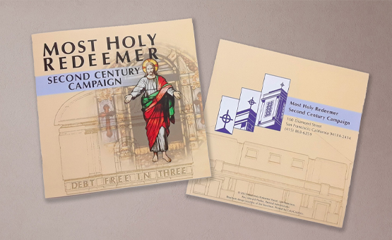
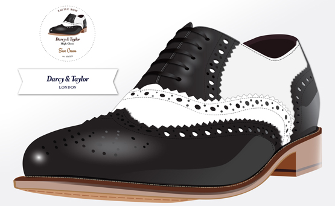
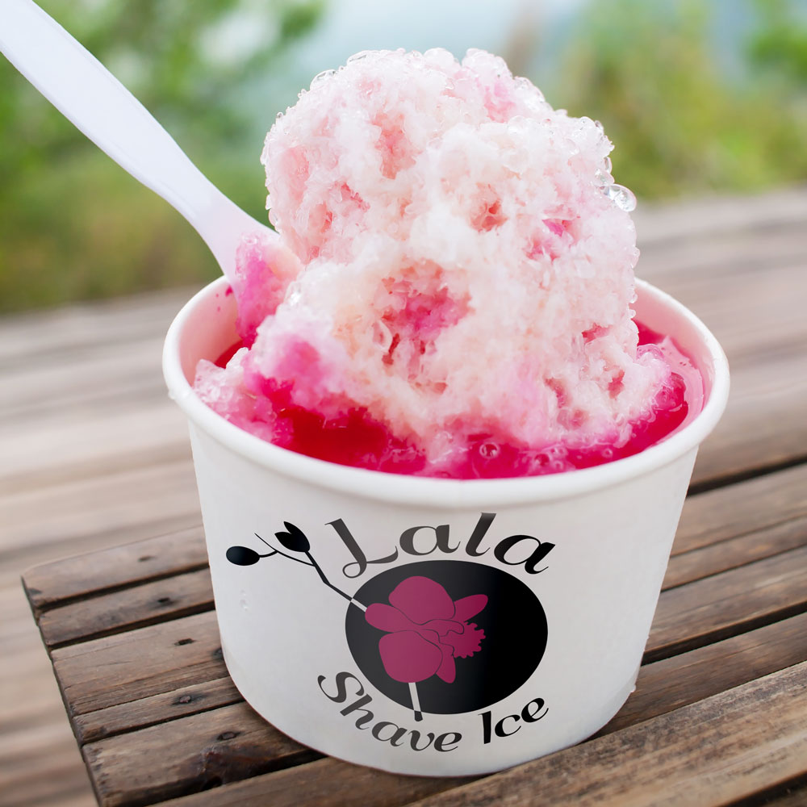
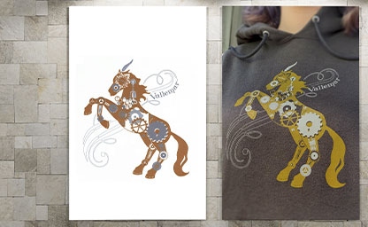

I have been happy to support local organizations and small businesses by meeting their graphic design needs. Recent project opportunities have included clothing graphics for a graduating 8th grade class, a logo for a Hawaiian shave ice business, and an academic tutoring service. More often than not, a client has a vision of what they want and I guide their ideas to best suit their target audience and end goals. It requires excellent communication and experience to interpret their vision into a memorable outcome. Often, final designs will include several options to accomodate its use for web and print.
When developing identity graphics for an even or business, I dive deep with a client and research the goal, explore the scope of where the logo will be used, and to whom the art is targeting. It's tremendously rewarding to see a design or logo out in the world, years after the contract is complete.
My student branding projects encompassed the full scope of creating brand identity for a fictitious company. Whether for letterhead, web graphics, or packaging, my method includes research and striving to understanding my client's goals. Two of my student examples: at the top of this page are examples of designs for a cider business, as are the shoe illustration below, for a shoe polish business.